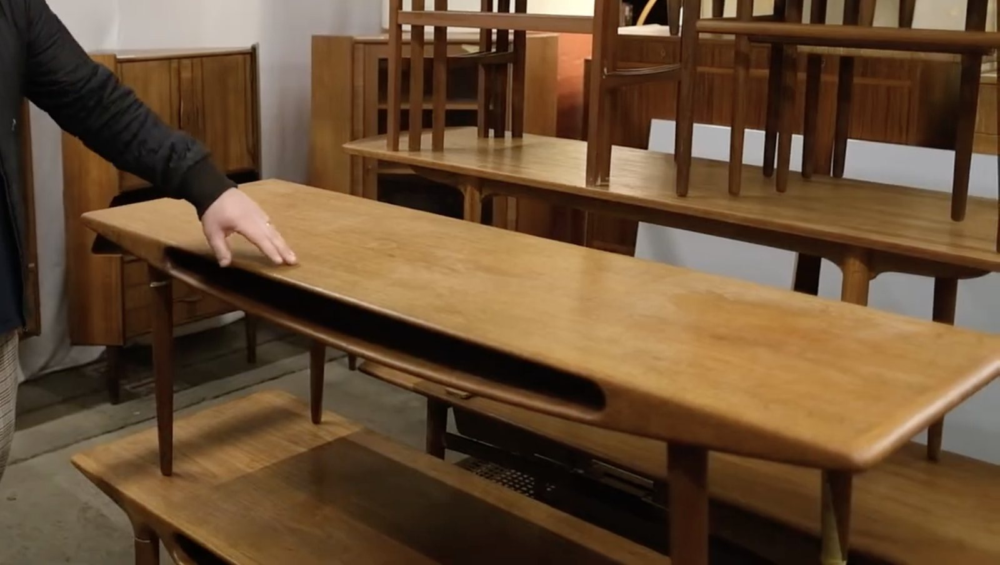
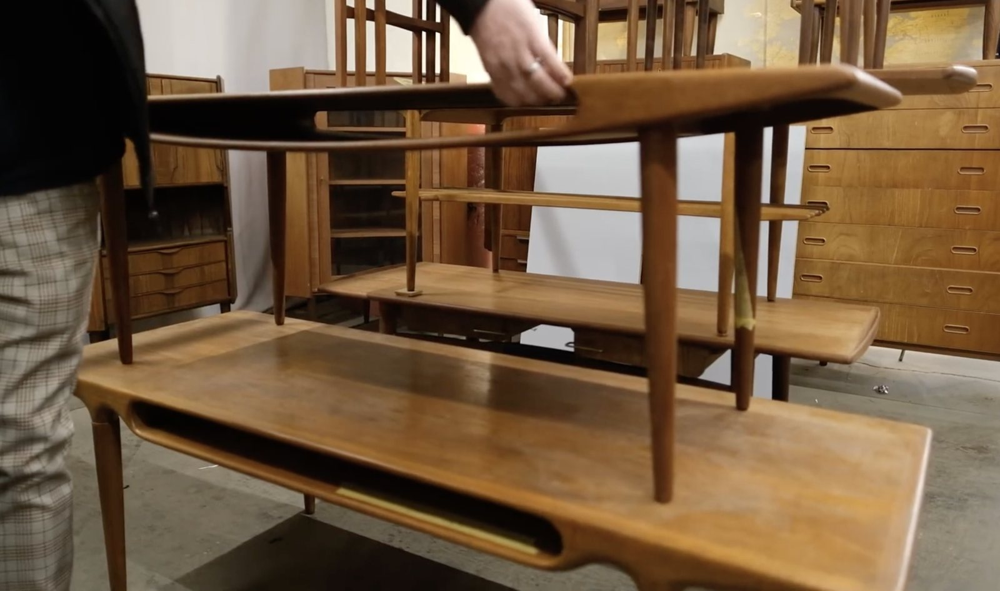

Móveis dinamarqueses vintage: o garimpo e a restauração da Lanoba Design
Café em cada casa, contêineres cheios de teca e uma mesa que sorri: Lars Noah Balderskilde e David Singh contam como levam a mobília dinamarquesa de meados do século XX das casas da Dinamarca a um galpão em Nova Jersey.

Para entrar numa casa dinamarquesa, é preciso aceitar um café. Às vezes, também um bolo.
Quem conta isso é Lars Noah Balderskilde, dinamarquês que, com o marido, David Singh, de Chicago, criou a Lanoba Design: um galpão em Jersey City, ao lado do túnel Holland, que importa, restaura e vende móveis dinamarqueses de meados do século XX. O episódio da série Curated Convos, da Montarr Media, acompanha os dois pelo armazém e é uma aula curta e afetuosa sobre o que torna esses móveis tão desejados.

Da cozinha ao contêiner
A história começou em 2016, num espaço de artistas no centro de Jersey City, com cerca de 300 móveis empilhados até o teto e a cama num canto. Cada peça entrava na pequena cozinha do casal, era restaurada ali e só então saía para dar lugar à próxima. Lars aprendeu o ofício com o irmão mais velho, em cuja oficina trabalhava quando adolescente, e com a família, que o levava todo fim de semana a feiras de antiguidades.
A ideia de negócio nasceu nos Estados Unidos. Em vendas de espólio na região de Chicago, onde vivem muitos descendentes de escandinavos, Lars viu a disputa pelos móveis dinamarqueses. Em Nova York, percebeu que só se encontravam peças de altíssimo preço, cadeiras de 10 ou 15 mil dólares, e ninguém atendia a classe média. Ele lembra que os dinamarqueses chamam esse design de mobília democrática, feita para estar ao alcance da maioria, e foi esse espaço que eles ocuparam. No primeiro mês venderam um banquinho por 50 dólares; hoje trazem cerca de 2.500 peças por ano, em sete a nove contêineres, e já passaram de 14 mil móveis.
Uma caça ao tesouro com café
O primeiro contêiner levou três meses e meio: Lars andava por bairros de aposentados que estavam se mudando para apartamentos menores, batia de porta em porta e perguntava se havia móveis antigos. Hoje a rede funciona no boca a boca. Ele vai à Dinamarca quatro vezes por ano, por três semanas, com uma lista de casas para visitar. Cada contêiner leva de 250 a 300 peças. E em cada casa tem café, de modo que, ao fim de oito ou dez visitas, ele está, nas palavras dele, acelerado de cafeína.
No galpão, a restauração é completa: limpeza profunda, lixamento, preparação e óleo, tudo o que for preciso para devolver a peça ao estado de setenta anos atrás. Ele faz questão de diferenciar isso do hábito de passar só um pouco de óleo e chamar de restaurado. A maior parte vende direto no showroom, antes mesmo de ser fotografada.
Por que esses móveis duram
As peças mais valiosas, diz Lars, são as do fim dos anos 1940 e dos anos 1950, quase todas feitas à mão. A Dinamarca saía da Segunda Guerra pouco industrializada, e os móveis seguiam o método de antes: não se punha madeira numa ponta da máquina para tirar um móvel pronto na outra. O material é quase sempre madeira: segundo ele, cerca de 95% em teca e 5% em jacarandá. E, se há uma palavra-chave no design dinamarquês, é a cadeira: foi em torno dela que tudo começou.
Entre as peças ainda sem restauro, ele mostra uma escrivaninha de pernas inusitadas, mesas de encaixar, que se guardam umas dentro das outras para as casas pequenas, e um aparador com portas de persiana, as tambour doors, tão bem feitas que, fechadas, parecem uma única tábua. Há ainda um raro aparador de dois corpos, de jacarandá, que funciona como bar e se tranca à chave longe das crianças, resgatado de um porão com a ajuda da própria dona, uma senhora de setenta e poucos anos com braços de quem trabalhou no campo.
O conselho que ele deixa vale para qualquer marceneiro: um móvel não deve ser comprado só pela função. Ele vai acompanhar você por dez, quinze anos ou mais, e precisa falar ao coração.
A mesa que sorri
De todas as peças do galpão, a que me prendeu foi uma mesa de centro de teca. No meio do tampo, junto à borda, abre-se uma fenda comprida que sobe nas pontas como um par de lábios: é a mesa que os dinamarqueses chamam de Smilet, o sorriso. Lars aponta duas delas, empilhadas, e diz o nome de quem a criou: Johannes Andersen. Conta também que, depois do sucesso do original, outros fabricantes dinamarqueses fizeram mesas parecidas, com o mesmo lábio no tampo, o que explica por que se encontram tantas "mesas sorridentes" pela Dinamarca.
Johannes Andersen nasceu em 1903, em Aarhus, e começou como aprendiz de marceneiro. Recebeu a carta de oficial em 1922. Desenhou por décadas para fábricas da Dinamarca, da Suécia e da Noruega, e a Smile é considerada a sua peça mais icônica. Foi lançada por volta de 1957 como modelo 206 da C. F. Christensen, a fábrica de Silkeborg conhecida como CFC Silkeborg.
O formato não é capricho. A fenda é uma prateleira embutida no próprio tampo, um bolso para jornais e revistas que hoje guarda controles remotos, e por baixo dela a borda do tampo acompanha a curva. Numa Dinamarca de casas pequenas, recém-saída da guerra, cada móvel precisava servir para mais de uma coisa, e Andersen resolveu a prateleira sem acrescentar uma peça sequer: escavou o espaço dentro da própria mesa e deu a ele o desenho de um sorriso.
É por isso que, para mim, ela resume o modernismo dinamarquês melhor do que muitos manifestos: madeira maciça trabalhada com cuidado de marceneiro, função resolvida com uma curva e uma dose de bom humor que não pede licença. Gostei tanto dela que escrevi um artigo só sobre a peça: The Smile, a mesa que sorri.

Para um panorama mais amplo, veja também o design de móveis dinamarquês.